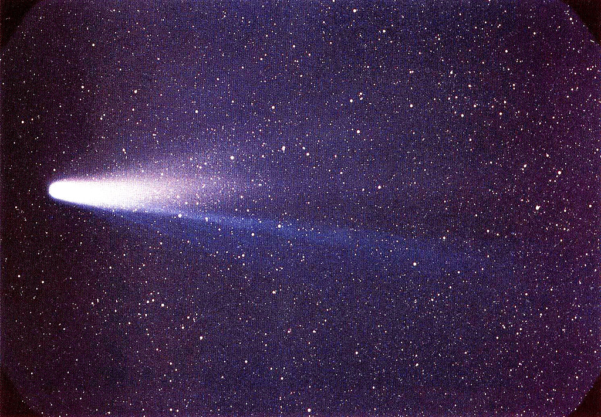

A Halley-üstökös (Edmond Halley (1656–1742) angol csillagászról kapta nevét) a Kuiper-övből származó, rövid keringési idejű üstökös, amelyet minden 75-76. évben lehet megfigyelni bolygónk felszínéről. A Halley-üstökös az egyetlen olyan ismert rövid keringési idejű üstökös, melyet rendszeres időközönként lehet szabad szemmel látni, és az egyetlen olyan, amelyet egy átlagos emberi élet alatt akár kétszer is. A Halley-üstökös legutóbb 1986-ban jelent meg a Naprendszer belső terében és legközelebb 2061 közepén lesz ismét megfigyelhető.

A Halley-üstökös keringési ideje az elmúlt három évszázad során 75-76 év körül alakult, ugyanakkor időszámításunk előtt 240 óta előfordult már, hogy 74, illetve 79 év volt a keringési ideje. Az üstökös pályája a Nap körül erősen elliptikus, keringési excentritása 0,967 (mely értéknél a 0 jelenti a kört, míg az 1 parabolikus pályát jelent). Az üstökös napközelben 0,6 CSE távolságban közelíti meg Naprendszerünk központi csillagát, amely a Merkúr és a Vénusz bolygók pályavonala közé esik. Naptávolban, azaz akkor, amikor az üstökös a legtávolabbra kerül pályáján a Naptól, akkor 35 csillagászati egység távolságra van, ami durván a Pluto távolságának felel meg. Naprendszerünkben szokatlan módon a Halley-üstökös retrográd irányban mozog, azaz a Napot a bolygók mozgásához viszonyítva épp fordított irányban kerüli meg. Az üstököspálya és az ekliptika 18°-os szöget zár be, azonban a retrográd mozgás miatt az inklináció 162°. 1910-es megjelenésekor relatív sebessége 70,56 km/s volt, ami 254 016 km/h sebességnek felel meg. Mivel keringése során két alkalommal is megközelíti bolygónkat, ezért összefüggésbe szokták hozni a május elején felbukkanó akvarida meteorrajjal, illetve az október végén jelentkező orionida meteorrajjal is. A Halley-üstökös az orionidák származási helye. A Halley-üstökös 1986-os megfigyelése során az akvarida meteorraj erősödését figyelték meg, amit szintén a Halley-üstökös jelenlétének tudnak be.